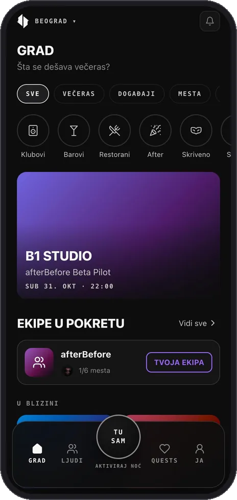
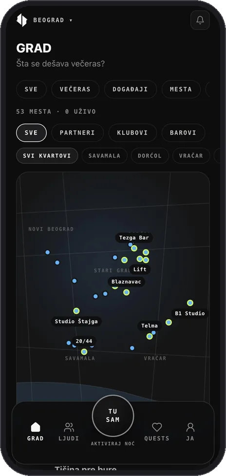
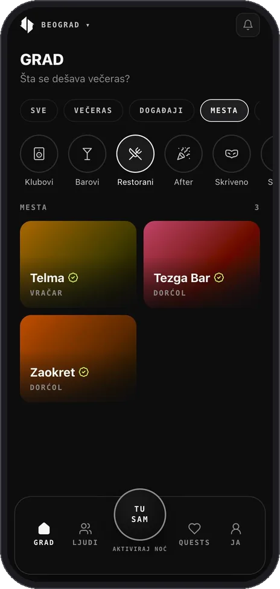
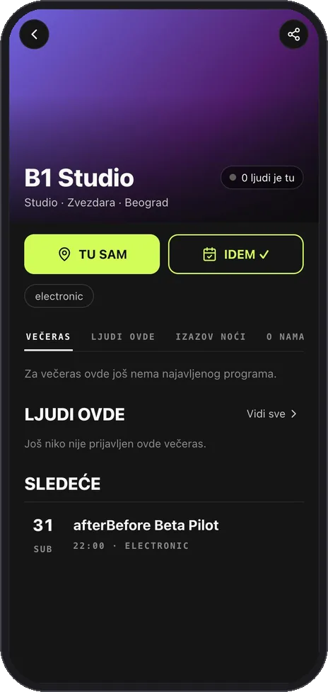
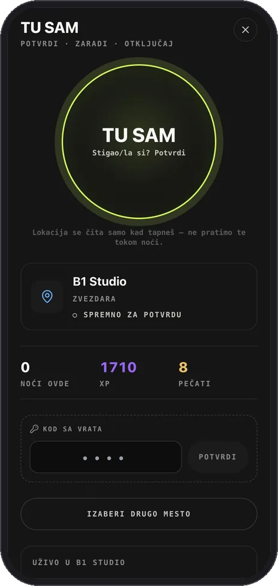
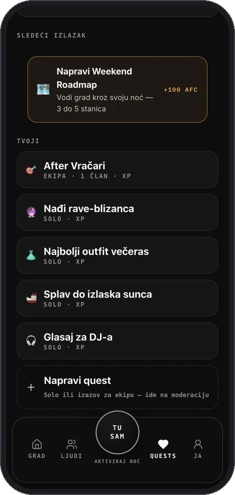
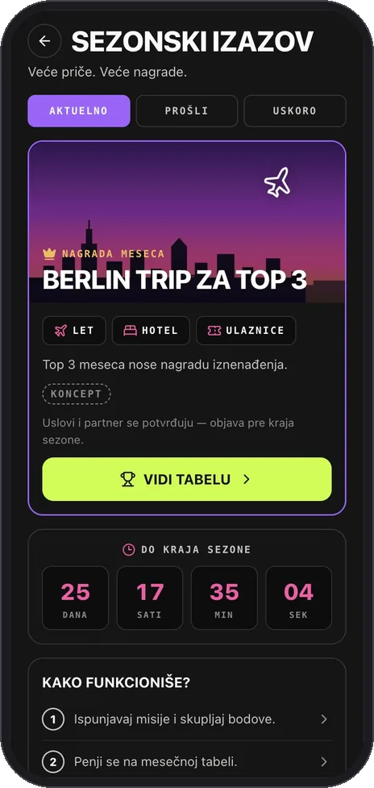
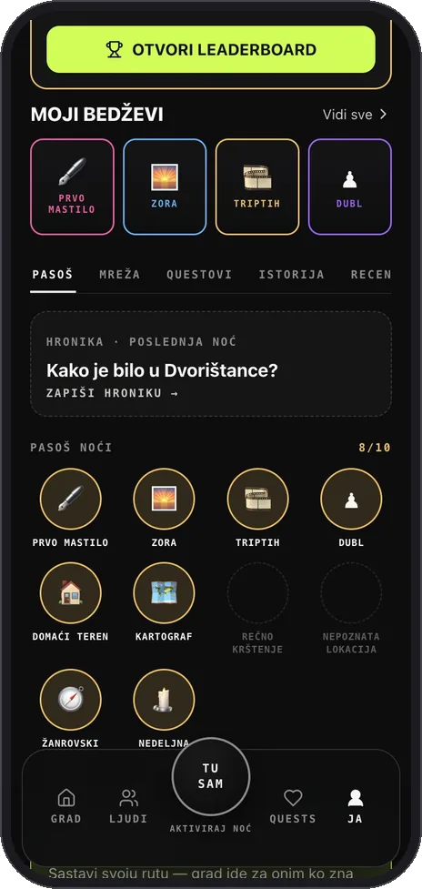

IGRAJ.
ISTRAŽUJ.
UČESTVUJ.
Questovi, bedževi i sezonski napredak prepoznaju tvoju aktivnost.
Vidi gde grad izlazi.
Pokaži da si tu. Zadrži noć.
Besplatna beta, bez preuzimanja iz prodavnice. iPhone: Safari → Podeli → Dodaj na početni ekran. Android: Chrome → ⋮ → Instaliraj aplikaciju.
Izlazak postaje veza.
Veza postaje deo tvoje priče.
Prva noć koja se cela odvija na afterBefore-u. Dođi, tapni TU SAM, igraj uživo i penji se na tabeli — u B1 Studiju.
Kraj i ceo program objavljujemo u aplikaciji. Partneri i sponzori ispod su koncept u dogovoru — nisu potvrđeni.
Grad je početna tačka.
Računa se ono što tamo uradiš.
Večeras, događaji, mesta, artisti i živa mapa — plus ko iz tvoje scene ide. Vidi šta se dešava i nađi mesto koje liči na tebe.
Otkrij noć. Otvori događaj. Odluči da ideš.

EKRAN IZ BETA APLIKACIJEIDEM kaže gde planiraš da ideš. TU SAM potvrđuje da si stigao/la. Taj trenutak otvara društveni kontekst, questove i uspomene tvoje stvarne noći.
Prisustvo uz saglasnost.
Bez stalnog javnog praćenja lokacije. Drugi vide koliko je ljudi tu — ne i ko.
Interaktivni koncept. Lokacija se ne prikuplja.







Tvoj Passport čuva uspomene.
Tvoja reputacija otvara nove mogućnosti.
Questovi, bedževi i sezonski napredak prepoznaju tvoju aktivnost.
Potvrđena istorija, utisci i pouzdanost određuju pravo na hostovanje i usluge.
Tvoja titula raste sa potvrđenim noćima, mestima i doprinosom — ne može da se kupi ni ubrza.
Ista osoba može večeras biti gost,
sutra vodič, sledeće nedelje host.
Afteri, žurke na krovu, sobe za slušanje i iskustva koja pravi zajednica. Hostovi biraju goste. Tačne lokacije ostaju privatne.
Pošalji zahtev. Host odlučuje da li prihvata.
Simuliran tok. Ne šalje se zahtev, plaćanje ni rezervacija.Vodiči kroz noć, DJ-evi, fotografi, barmeni i produkcijske ekipe. Reputacija može postati prilika za posao.
Privatnost, saglasnost, prijave i bezbednost ostaju odvojeni od Helpers tržišta.
Questovi povezuju kampanju mesta
sa stvarnim učešćem i povratnim posetama.
Primer toka merenja. Ove vrednosti nisu stvarni rezultati platforme.
MESTARazumeju ko se vraća.
ZAJEDNICEOstavljaju potvrđene utiske.
PARTNERINagrađuju učešće.
GRAD. IDEM. TU SAM. NightHub. Ljudi. Questovi, DARES i sezonska tabela. Passport. Potvrđeni utisci i uvid za mesta.
Reputacija, pravo na hostovanje, privatni pristup, rezervacije vodiča, plaćanja i isplate.
Više gradova, više kreativnih usluga, sadržaj, kulturni predmeti i iskustva koja vodi zajednica.
Portreti scene, artisti i ambasadori brenda, mesta, foto-eseji i kultura iza beogradskih noći — prvo digitalno, pa štampano.
Ova prezentacija pokazuje pravac proizvoda. Ekrani i interakcije su demonstracija; ne tvrdi se spremnost za produkciju.
afterBefore joj daje operativni sistem.
Besplatna beta, bez preuzimanja iz prodavnice. iPhone: Safari → Podeli → Dodaj na početni ekran. Android: Chrome → ⋮ → Instaliraj aplikaciju.